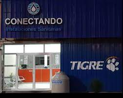

¿QUIÉNES SOMOS?
Conectando es una empresa distribuidora de productos para la instalacion sanitaria.
Buscamos la calidad y accesibilidad para todo el que pueda elegirnos.
Operamos en los segmentos de hidráulica, drenaje, accesorios sanitarios, infraestructura, industria, riego, metales sanitarios y en soluciones para aguas y efluentes en el tratamiento de reutilización de aguas.

PROPOSITO
Nos impulsa cuidar el agua para transformar la calidad de vida de las personas. Somos la empresa que transforma su experiencia con el agua más allá de la obra, a través de las mejores soluciones del mercado.
Nuestra trayectoria está marcada por el compromiso de ofrecer soluciones completas, innovadoras y de alta calidad, facilitando la vida de quienes construyen y diseñan.
Cuidar el agua para transformar la calidad de vida de las personas. El propósito es transformar tu experiencia con el agua más allá del trabajo, en el desarrollo e implementación de soluciones para la conducción, conservación y reutilización del agua. Escuchar y comprender al cliente y al negocio es nuestro punto de partida para encontrar la mejor solución.